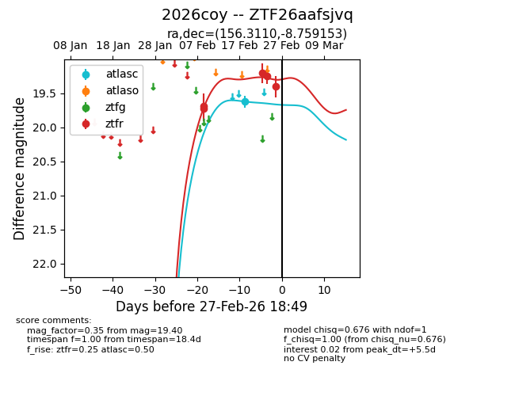
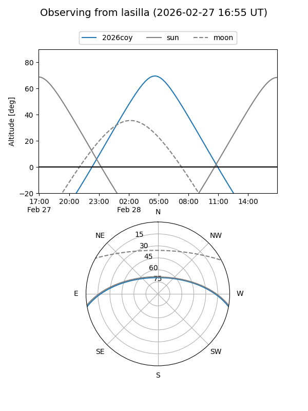
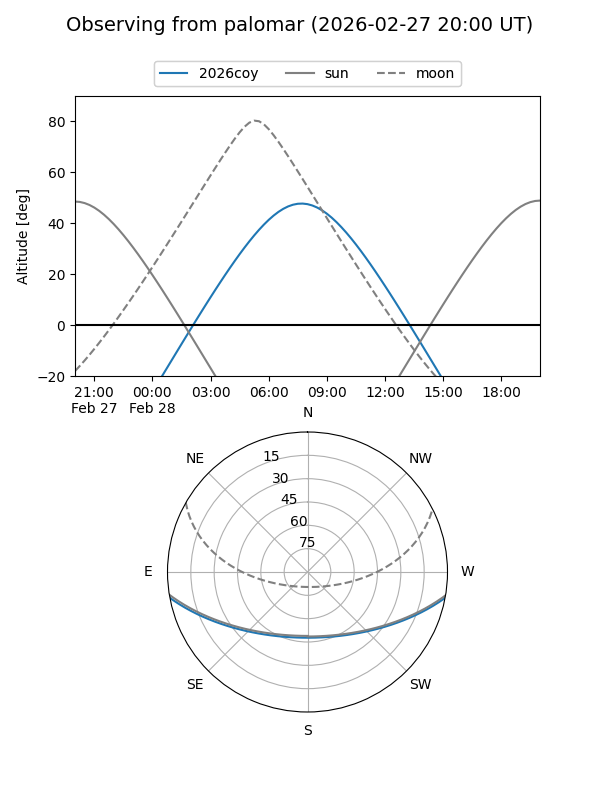
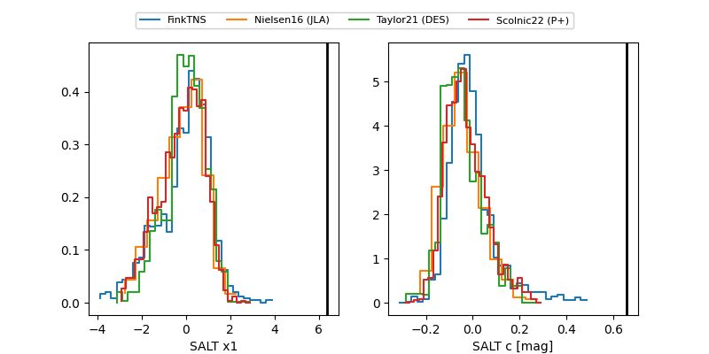

2026coy
Target 2026coy at 2026-02-27 18:51
Aliases and brokers:
FINK: link
Lasair: link
ALeRCE: link
TNS: link
YSE: link
alt names
ZTF26aafsjvq (ztf,fink_ztf)
2026coy (tns,yse)
Coordinates:
equatorial (ra, dec) = 156.3110,-8.75915
equatorial (HMS+DMS) = 10:25:14.64,-08:45:32.95
galactic (l, b) = (253.1434,+39.58322)
Flags:
Photometry:
last atlasc=19.62, ztfr=19.40
1 atlasc, 5 ztfr detections
Lightcurve

Visibility


Additional plots
